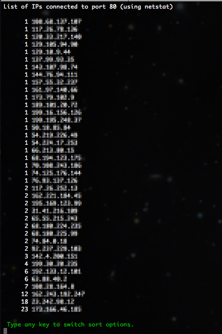

One of the biggest challenges when collaborating with others in developing software and websites is setting up the development environment. The good ol “it works on my machine…” problem.
Well, this is no panacea for development, but it does a good job of setting up a basic environment pretty quickly.
You’re in for a special treat, because I’m going to show you not one (1), but two (2) different development environments; one for PHP, MySQL, Apache and phpMyAdmin, and one for Python (Flask) and PostgreSQL with pgAdmin. Each of these in a Docker container for ease of use.
Pre-requisites
For any of this to work, make sure you have Docker Desktop installed and running.
We’ll be using a terminal application for running some commands, so you’ll need some familiarity with that too.
Git is used to copy the files from the GitHub repo, but you can also download them as a zip file.
PMAMP
We’ll tackle the PhpMyadmin Apache Mysql Php (PMAMP) environment first.
After setting this up, we’ll have a place to put PHP code, a running Apache web server, a MySQL server and a running instance of phpMyAdmin.
You can view the website at http://lvh.me. lvh.me is just a nice service that points back to your local machine (127.0.0.1 or localhost). It makes it look like you are using a real domain name.
Just add your domain to the list (or remove the other ones). Each entry must use the backtick, rather than the single quotes. WordPress mangles the backticks, so I am using single quotes here.
Now you just need to let your computer know to redirect all traffic to that domain name to itself.
You’ll need to edit the /etc/hosts file (Linux or Mac), or c:\windows\system32\drivers\etc\hosts (Windows). Now you can develop for any domain name right on your computer as if it were using the actual domain name.
Put all of your website files in the ‘www’ folder and you’re ready to develop!
The prompt that is generated uses a command to clear the text color that I hadn’t seen before: tput sgr0
My prompt (which I put in the ~/.bash_profile file) is:
#PROMPT
# To enter an emoji, while in insert mode type Ctrl-v, then enter the UTF8 code
# for the emoji, ex. U26A1 (note, use capital letters), then type ESC key. You
# can get a list of UTF8 emoji codes here: http://graphemica.com/
export PS1="\[\033[38;5;39m\]\u\[$(tput sgr0)\]\[\033[38;5;15m\]@\[$(tput sgr0)\]\[\033[38;5;229m\]\h\[$(tput sgr0)\]\[\033[38;5;15m\] [\[$(tput sgr0)\]\[\033[38;5;76m\]\w\[$(tput sgr0)\]\[\033[38;5;15m\]]\n\[$(tput sgr0)\]\[\033[38;5;215m\]⚡\[$(tput sgr0)\] "
So, of course, I spent the next 40 minutes trying to figure out all I could about that command, and more specifically, what ‘sgr’ meant.
I first scoured Google search results. Mostly just information about tput. Then I took to the manual pages: man tput was helpful in learning about what tput does. That led to man terminfo and finally to man ncurses. None of those man pages define ‘sgr’, but ‘ncurses’ did give a better clue by stating that “Thencurseslibrary can exploit the capabilities of terminals which implement the ISO-6429 SGR 39 and SGR 49 controls”
And there we go! Page 75 of the PDF (page 61 internally numbered), section 8.3.117!
SGR – SELECT GRAPHIC RENDITION
And the 0 means = “default rendition (implementation-defined), cancels the effect of any preceding occurrence of SGR in the data stream regardless of the setting of the GRAPHIC RENDITION COMBINATION MODE (GRCM)”
To make things a little more readable, I made the color codes into variables:
#PROMPT
# To enter an emoji, while in insert mode type Ctrl-v, then enter the UTF8 code
# for the emoji, ex. U26A1 (note, use capital letters), then type ESC key. You
# can get a list of UTF8 emoji codes here: http://graphemica.com/
BLUE='\[\033[38;5;39m\]'
PALE_YELLOW='\[\033[38;5;229m\]'
RESET='\[$(tput sgr0)\]'
GREEN='\[\033[38;5;76m\]'
export PS1="${BLUE}\u${RESET}@${PALE_YELLOW}\h${RESET} [${GREEN}\w${RESET}]\n⚡${RESET} "
And there we go. Much too much time learning stuff! And my prompt looks like this:
I perhaps went a little overboard and made it pretty robust. I was going to take the opportunity to learn some ruby, but ended up writing it in Bash. One thing I learned is that Bash does not handle comparing floating point numbers. And that was a bit part of the requirement.
I’ll run through how to use the script as well as go through some of the logic found in the script.
Running the Script
Rather than repeat everything on the github page, just take a look there for steps on how to set up and run the script.
Basically, you just run the script on the command line, it prompts for the path to the omeka install (or you can give it after the command), and automatically upgrades Omeka and Neatline to then next higher version number.
./onus.sh /path/to/omeka/install
You can add some flags/options to the command to upgrade Omeka and Neatline to a specific version, or exclude the upgrading and just make a backup copy of the database and files into a zip file.
About the Script
The purpose of the script is to upgrade Omeka and Neatline. One big problem arose when upgrading sites that were previous to 2.0.0.
Omeka and Neatline both go through some significant database (and code) changes from 1.5.x to 2.x.x. The biggest seemed to be that the upgrade script for Neatline didn’t “take” and needed to be done manually. Here are the steps to do that by hand (the script will take care of this if you use it).
Upgrading Omeka and Neatline from 1.5.x to 2.x.x
The first step is always to make a backup copy of the database and files. That way if anything goes awry, you can easily put things back together.
To back up the database, simply take a MySQL dump.
Do this in the main directory of Omeka. Then make a zip file of the entire Omeka directory.
zip -r omeka-backup.zip /path/to/omeka/
Next, deactivate any plugins you have installed, including Neatline and NeatlineMaps. One of the big changes with 2.x.x version is that NeatlineMaps is rolled into Neatline.
Grab a 2.0.x version of OmekaEither do this with github
Add the 2.0.0 version of Neatline plugin into the NewOmeka/plugins directory, along with any other plugins you may need. NeatlineText, NeatlineSimilie and NeatlineWaypoints may be needed if you used that functionality in the previous version.
Copy the db.ini file from the old installation to the NewOmeka/ directory.
Now load the admin page for NewOmeka/ in the browser: http://domain/NewOMeka/admin/. Upgrade the database and login to upgrade and reactivate the Neatline plugin and other plugins as needed.
You may notice things go smoothly, except the existing Neatline exhibits may not transfer. To get them into the new database tables, add the following two lines at line 80 in the NewOmeka/plugins/Neatline/migrations/2.0.0/Neatline_Migration_200.php file:
Initially, I used the script to upgrade both Omeka and Neatline to the next higher version, going through every single minor version incrementally. When upgrading from Omeka 1.5.1 and Neatline 1.0.0 to the latest versions (2.2.2 for Omeka and 2.3.0 for Neatline), I had to run the script over 20 times!
That was way too intensive, so next I added some logic to just skip to the next major release. That dropped the times needed to run the script down to four. But I could do better than that! I added in some command line options/flags that allow you to upgrade to any Omeka or Neatline version you specify. Now you can upgrade from Omeka 1.5.x and Neatline 1.x.x directly to Omeka 2.0.4 and Neatline 2.0.0, then right to Omeka 2.2.2 and Neatline 2.3.0. Two steps!
Bash and floating points
As mentioned above, Bash does not work with floating points, so I had to create a function to deal with that. Dealing with version numbers, especially with minor version numbers kind of requires the need to compare floating point numbers…
In the script I use two different functions:
# Compare two floating point numbers.
#
# Usage:
# result=$( compare_floats number1 number 2 )
# if $result ; then
# echo 'number1 is greater'
# else
# echo 'number2 is greater'
# fi
#
# result : the string 'true' or 'false'
# number1 : the first number to compare
# number2 : the second number to compare
function compare_floats() {
echo | awk -v n1=$1 -v n2=$2 '{if (n1<n2) printf ("false"); else printf ("true");}'
}
This function basically compares two numbers. It outputs true if the first number is greater than the second number, and false if the first number is less than the second number. Another way to think about it would be, is the second number less than the first number?
# Pass the current version first, then the array
# the function echoes the version just greater than the current version,
# i.e., the next version to upgrade to.
#
# Usage:
# variable=$( get_next_version $num array[@] )
#
# variable : the next version greater than $num
# $num : the current version
# array[@] : an array of all possible versions
function get_next_version() {
num=$1
declare -a ARRAY=("${!2}")
for i in ${ARRAY[@]}
do
if awk -v n1=$num -v n2=$i 'BEGIN{ if (n1<n2) exit 0; exit 1}'; then
echo $i
break
else
continue
fi
done
}
For this function, you pass the current version and an array of possible version numbers. The function will compare the number you pass it, compare it with the array, and echo the next highest number.
Both functions use the same awk command, but in a little different format. They test wether one number is greater than the other, and return ‘true’ or ‘false’.
When I first became a systems administrator of a large web server, I wanted to know what the current traffic to all of the virtual hosts (vhosts) looked like. I wanted to see which domains were getting the most traffic and where that traffic was coming from. So began my long search for a sufficient tool. There are many out there (apache-top, Apachetop, wtop, htop, IPTraf, etc). But they didn’t do all of the things I wanted. Basically they were just command line versions of the output of Apache mod_status, or they did complex log analysis.
I wanted more. The ability to search, or show only a certain domain name, see a list of IP address and how many connections from that IP address (to detect botnet attacks), and more.
So in true sys admin fashion, I built the tool myself. It is sufficiently stable and usable enough to warrant a blog post and hopefully engender some usage by others, which hopefully will encourage ideas and improvements from the community. Go ahead and grab a copy from the github repo, https://github.com/mossiso/atop
My idea is not much different than some of the tools I linked to. I’m basically writing a wrapper around the Apache mod_status output, but this tool has the ability to do more. So here’s a little walk through of what this tool does.
Requirements
Apache with mod_status: This tool is built around the Apache mod_status output, so that obviously has to be installed and set up. The ExtendedStatus option has to be enabled in the httpd.conf file.
links: This is a command line based web browser of sorts. Using the -dump flag, it just spits out the page to the command line.
netstat: This is used for one of the options to display all of the IPs connected to the webserver (via port 80).
This tool is just a BASH script, so once you download the “atop” file, just plop it anywhere in your home directory on your web server, change the permissions so it is executable
[code lang=”bash”]chmod 700 atop[/code]
and run it
[code lang=”bash”]./atop[/code]
There are now several options you can sort the results by:
==============================================================
a = sort all threads by time
c = sort by CPU, no GCRK_
i = list IPs connected to port 80 (uses Apache Server Status)
k = sort by K (Keep alives)
l = list IPs connected to all ports (uses netstat)
n = list IPs connected to port 80 (uses netstat)
o = sort open connections by CPU
p = sort only POST threads by time
r = raw apache status output (good with limit of at least 50)
s = search for a term, returns raw Apache Server Status results
w = sort by inactive workers
q = quit
To see the list of options while the command is running, just type any key on the keyboard.
Getting the BASH script to be responsive to the keyboard was tricky, and took me the longest time to figure out. For a while I could get the results to be displayed and refresh every N seconds, I could even get it to do the sort options, but only if I started the script with that option. So I was super excited to figure out the logic to get the script to respond to input.
The trick lies in setting the output commands in an infinite while loop. At the end of the loop it does a regular bash prompt using “read”. Normally this waits for a response, but the timeout feature allows you to set that to one second, which then goes through the while loop again. If a key is pressed, it breaks the while loop and prints the options message. When an option is selected it goes through that while loop.
Features
Some of the sort options I use most often are POST (p), CPU (c), IPs according to Apache (i), and IPs according to the server (n). I walk through those one by one.
POST
This is probably the most helpful of the options. Usually, when a website is getting hammered, it’s because it is getting comment spam or login attempts. These all require POST requests. If you see a large number of POST requests for a single vhost, then look at the IP addresses sending the requests; you can bet if all the requests are from the same IP, that it should be blocked.
CPU
This is a pretty good overview of what Apache traffic your server is handling. It shows GET and POST requests and sorts them with the most heavy CPU usage requests on the bottom. It filters out open processes with no connections, and a few other things like closing connections.
IPs (Apache)
This one is great, too. It shows the IP addresses that are connected to Apache, and sorts them by how many connections are being made. The IPs with the most connections are at the bottom. If you see an IP address with over 10 connections for a few minutes, you can bet they are up to no good. Double check with the POST option to see if they are spamming.
IPs (Netstat)

This option gets all traffic to port 80 using netstat. It filters out local traffic (and GMU traffic, but you can edit that out), and then does the sorting and organizing by how many IP addresses are connecting. This gives a little more detail than the other IP option.
If you find any bugs in the script or have a great idea for other options, feel free to fork or submit patches, or report bugs on the github repo.
I have been lacking two things for so long, now that I can do it, I wonder if I will ever remember to use it!
The Problem
I use a MacBook Pro with OS X Mavericks. I log into my Linux servers with SSH. I use GNU screen to allow me to save sessions, detach, and come back later without closing running programs and what not. BUT, I can’t use the mouse scrolling for the terminal output or to scroll through files opened with Vim.
The Solution
I finally found the pieces missing to make this possible. All with a couple of lines of code and a new SIMBL bundle.
To get the scroll working in screen, just add this line to your .screenrc
defscrollback 5000
termcapinfo * ti@:te@
It’s not perfect. If you have multiple windows in a screen session, then the history buffers get all meshed together. But I usually just need to see info from a command output that is longer than the screen window, and this will let me see it. Finally! Thanks Slapitjack! See here for an explanation of the code.
To get the scroll back in Vim, whether using screen or not. You first need to install SIMBL. The version for Snow Leopard works with Mavericks. Then grab a copy of MouseTerm. The installer didn’t work, but you just need to copy the MouseTerm.bundle to /Library/Application Support/SIMBL/Plugins folder (or ~/Library/Application Support/SIMBL/Plugins if needed for just your user account). Restart your Terminal and you’re good to go.
Viola! Vim and scrolling, GNU screen and scrolling! Live as it was meant to be…
There are four basic steps to creating a personal website.
1. Content
You may want to start out with a cool design, or fun idea on how to interact with visitors, or what have you. But really, the most important thing a website has going for it is the content. Design is a close second (but we’ll talk about that last), because people tend to shy away from “ugly” sites. But they won’t even go in the first place if the content isn’t relevant.
You’ll need to ask yourself a few questions to get an idea of what kind of website you need. The answers will even help define the design, and determine the platform, or website technology, that you use.
What information do you want to share?
Why do you want to make a website?
Do you want conversations to take place on your website?
Do you want a blog, a simple website with information about you or a topic, or something else?
2. Domain Name
All computers on the Internet or World Wide Web have a unique number associated with them, called an IP (Internet Protocol) Address. Kind of like a Social Security Number. In order to get data from a server (a computer that “serves” content, either data, websites, videos, pictures, etc), you would need to type in the specific number into your web browser. IP Addresses are in the format XXX.XXX.XXX.XXX. If you connect to the Internet at home, you might see your laptop get an IP Address like 192.168.1.20.
Since humans remember letters and words better than numbers, there is a system set up to translate words into the IP Address for a server. It is kind of like the old fashioned telephone directory. You can remember the telephone number to a person’s house, or look up the person in the phone directory to get their number. This also allows for multiple names to be pointed at one IP Address, like multiple people living in one house, sharing a phone number.
This set of characters or words is called a domain name. A domain name allows for an almost unlimited number of unique identifiers to point to a limited number of IP Addresses. The domain name plays an important role in search engine rankings. If this is your personal site, try to get your name, or part of it, as the domain name. It can be all you need for “brand” identification.
Shop around before you buy a domain name. There are plenty of options out there, just do a search for domain registrar. Often a hosting provider will sell domain names as well. As of this writing, you should be able to get a domain name for around $10-$11 a year. Make sure the registrar includes DNS management.
.org, .net, .com, .info, .us, … What type of domain name should you buy? There are 19 top level domains (TLDs the very last part of a domain name, the part followed by the last period), and over 250 country code top-level domains (.us, .me, .de, .uk, etc.) That depends on a few things, the most important being, which one is available. Generally, .com and .org are the most sought after. Here is a list of the top-level domains and their intended purposes (from Wikipedia).
This is an open TLD; any person or entity is permitted to register. Though originally intended for use by for-profit business entities, for a number of reasons it became the “main” TLD for domain names and is currently used by all types of entities including nonprofits, schools and private individuals. Domain name registrations may be challenged if the holder cannot prove an outside relation justifying reservation of the name, to prevent “squatting“.
This is an open TLD; any person or entity is permitted to register; however, registrations may be challenged later if they are not by individuals (or the owners of fictional characters) in accordance with the domain’s charter.
This is an open TLD; any person or entity is permitted to register. Originally intended for use by domains pointing to a distributed network of computers, or “umbrella” sites that act as the portal to a set of smaller websites.
This is an open TLD; any person or entity is permitted to register. Originally intended for use by non-profit organizations, and still primarily used by some.
Country code top-level domains can be used as well, often to create clever domain names (called domain hacks) like del.icio.us, bit.ly, instagr.am, pep.si, and redd.it.
source, creative commons search on flickr.com
3. Hosting
A hosting provider is the company that owns the servers where your website lives. There are many free options. Look for a hosting provider that offers “easy” installations of common software like WordPress, Drupal, etc.
Independent on the platform you choose, there are usually thousands of free themes available for easy download and install. When you pick a platform, look on their site for places to find free themes.
Designing a website takes lots of work to make it look nice. The better the design, the more resources are needed (be they time, or money).
Make a temporary directory /root-b and copy everything from root’s home directory to there, because it will be erased when we make the GFS2 file system.
Copy /root/.ssh/known_hosts to /etc/ssh/root_known_hosts so the file is different for both servers.
Before doing the home directory, we have to remove it from the local LVM.
unmount /home
lvremove bill_local/home and on ted lvremove ted_local/home
Remove the line from /etc/fstab referring to the /home directory on the local LVM
Then add the clustered LV.
lvcreate --name home --size 50GB StorageTek2530
Create GFS2 files systems on the LVM partitions created on the StorageTek. Make sure they are unmounted, first. NOTE: This part only needs to be done once on one server.
NOTE: GFS2 file systems that have been mounted manually rather than automatically through an entry in the fstab file will not be known to the system when file systems are unmounted at system shutdown. As a result, the GFS2 script will not unmount the GFS2 file system. After the GFS2 shutdown script is run, the standard shutdown process kills off all remaining user processes, including the cluster infrastructure, and tries to unmount the file system. This unmount will fail without the cluster infrastructure and the system will hang.
To prevent the system from hanging when the GFS2 file systems are unmounted, you should do one of the following:
Always use an entry in the fstab file to mount the GFS2 file system.
If a GFS2 file system has been mounted manually with the mount command, be sure to unmount the file system manually with the umount command before rebooting or shutting down the system.
If your file system hangs while it is being unmounted during system shutdown under these circumstances, perform a hardware reboot. It is unlikely that any data will be lost since the file system is synced earlier in the shutdown process.
Make the appropriate folders on each node (/home is already there).
…copy somebody’s code. Or at least your own from the past that works.
I finally got the map to work for my Exhibit exhibit. See.
First I copied the tutorial here. When that was working, I carefully copied it to the file I wanted it to be in and… nothing. Still broken.
So next I commented out all extraneous stuff, and finally got it to work. Now came the fun part of tracking down what code was making my awesome map look like nothing. I narrowed it down to something within the <header> tag. So line by line I uncommented and tested until I tracked the issue down to the bootstrap.css file I was using.
Then came the same process within the bootstrap.css file. It was easily 1000 lines long, so a line by line process wasn’t going to work. Instead I commented out the first have of the file. Bing, the map displayed, so it was somewhere within that first 500 lines. Then I commented out the first 250 lines. Bing again. I kept dividing the culprits in half until I narrowed it down to styles for the img tag. Commented those out and I was in business.
Through that grueling process I lost the images of the documents on the first page. Now I have to figure out how to get those back, apply some styling and we’re all set.
Unfortunately I wasn’t ever able to get it to pull in the data from a spreadsheet, so the JSON file will have to do. The process for making a JSON file from a spreadsheet is simple:
1. Make the spreadsheet file so that the headers are encapsulated with curly braces ‘{ }’
2. If you’re using Google spreadsheets, export it as an Excel file. You’ll have to open it in Excel and save it as an older file format, because the next step doesn’t like .xlsx.
I’m trying this new idea for backing up our production MySQL servers. I have a backup server that basically runs rdiff-backup in the morning across several servers, but then does nothing for the rest of the day. It’s a pretty decent machine, so I’d like to utilize some resources. Replicating a MySQL server is a good way to ensure High Availability in case of a failure. The backup server acts as a slave to the master (production) server. Basically, the slave is an exact copy of the master. They are two separate instances of MySQL server running on two physical servers. Whatever queries run on the master are sent to the slave so it can do the same. This way they are kept completely in sync. You could also have the slave take over for the master, should the master server happen to fail.
The slave is an ever updating duplicate of the master.
The only problem I face with this set up, though, is that I have multiple production servers out there. So this only works if this backup server could be a slave for multiple machines.
No slave can serve two masters.
This is not possible, though, because, of course, no slave can serve two masters. Fortunately, a server can have multiple instances of MySQL running on it! So, in a sense, we have a server with multiple MySQL instances, to which a master can replicate. More about that set up in an upcoming post.
The slave has multiple instances of MySQL running.
A how to on this blog, shows how this can be done. I’ll replicate the process below.
STEPS TO MULTIPLE MYSQL MADNESS
On the slave server
Step 1. Install MySQL
We’ll be working with CentOS 5.8, but this could really apply for any OS. First we’ll need to install MySQL like normal.
yum install mysql mysql-server
There are plenty of good tutorials out there on how to install the specific version of MySQL you want on the specific OS you’re running.
Step 2. Set up the data area.
You’ll need to have a different folder for each of the MySQL instances, say /dbases/master-a/, /dbases/master-b/, and /dbases/master-c/.
mkdir -p /dbases/{master-a,master-b,master-c}
Step 3. Copy the default my.cnf file
This is the default MySQL config file, it may be named differently on other OSes.
For each new config file, you’ll need to specify some unique variables.
[mysqld]
port=3307
datadir=/dbases/master-a
socket=/dbases/master-a/mysql.sock
user=mysql
server_id=3307
log-bin=/dbases/master/mysql-bin.log
# Disabling symbolic-links is recommended to prevent assorted security risks;
# to do so, uncomment this line:
symbolic-links=0
[mysqld_safe]
log-error=/dbases/master-a/mysqld.log
pid-file=/dbases/master-a/mysqld.pid
The port option sets this MySQL instance on a different port than the default 3306. The datadir, socket, log-bin, log-error, and pid-file options make sure the necessary files are not using the default files.
Step 5. Create new init scripts.
The init script allows the server to start and stop the service at boot time, and allows for easy start up and shutdown (on CentOS/RedHat, at least – with an easy service mysqld start).
cp /etc/init.d/mysqld /etc/init.d/mysqld-master-a
Just do one for now. We’ll copy the new one to create the others, then just do a quick search and replace in those files to change the master-a to master-b and master-c.
Step 6. Edit the init script
#!/bin/bash
#
# mysqld This shell script takes care of starting and stopping
# the MySQL subsystem (mysqld).
#
# chkconfig: - 64 36
# description: MySQL database server.
# processname: mysqld
# config: /etc/master-a.cnf
# pidfile: /dbases/master-a/mysqld.pid
# Source function library.
. /etc/rc.d/init.d/functions
# Source networking configuration.
. /etc/sysconfig/network
prog="MySQL"
# extract value of a MySQL option from config files
# Usage: get_mysql_option SECTION VARNAME DEFAULT
# result is returned in $result
# We use my_print_defaults which prints all options from multiple files,
# with the more specific ones later; hence take the last match.
get_mysql_option(){
result=/usr/bin/my_print_defaults "$1" | sed -n "s/^--$2=//p" | tail -n 1
if [ -z "$result" ]; then
# not found, use default
result="$3"
fi
}
get_mysql_option mysqld datadir "/dbases/master-a"
datadir="/dbases/master-a"
get_mysql_option mysqld socket "/dbases/master-a/mysql.sock"
socketfile="/dbases/master-a/mysql.sock"
get_mysql_option mysqld_safe log-error "/dbases/master-a/mysqld.log"
errlogfile="/dbases/master-a/mysqld.log"
get_mysql_option mysqld_safe pid-file "/dbases/master-a/mysqld.pid"
mypidfile="/dbases/master-a/mysqld.pid"
defaultfile="/etc/master-a.cnf"
start(){
touch "$errlogfile"
chown mysql:mysql "$errlogfile"
chmod 0640 "$errlogfile"
[ -x /sbin/restorecon ] && /sbin/restorecon "$errlogfile"
if [ ! -d "$datadir/mysql" ] ; then
action $"Initializing MySQL database: " /usr/bin/mysql_install_db --datadir="$datadir" --user=mysql
ret=$?
chown -R mysql:mysql "$datadir"
if [ $ret -ne 0 ] ; then
return $ret
fi
fi
chown mysql:mysql "$datadir"
chmod 0755 "$datadir"
# Pass all the options determined above, to ensure consistent behavior.
# In many cases mysqld_safe would arrive at the same conclusions anyway
# but we need to be sure.
/usr/bin/mysqld_safe --defaults-file="$defaultfile" --datadir="$datadir" --socket="$socketfile" \
--log-error="$errlogfile" --pid-file="$mypidfile" \
--user=mysql >/dev/null 2>&1 &
ret=$?
# Spin for a maximum of N seconds waiting for the server to come up.
# Rather than assuming we know a valid username, accept an "access
# denied" response as meaning the server is functioning.
if [ $ret -eq 0 ]; then
STARTTIMEOUT=30
while [ $STARTTIMEOUT -gt 0 ]; do
RESPONSE=/usr/bin/mysqladmin --socket="$socketfile" --user=UNKNOWN_MYSQL_USER ping 2>&1 && break
echo "$RESPONSE" | grep -q "Access denied for user" && break
sleep 1
let STARTTIMEOUT=${STARTTIMEOUT}-1
done
if [ $STARTTIMEOUT -eq 0 ]; then
echo "Timeout error occurred trying to start MySQL Daemon."
action $"Starting $prog: " /bin/false
ret=1
else
action $"Starting $prog: " /bin/true
fi
else
action $"Starting $prog: " /bin/false
fi
[ $ret -eq 0 ] && touch /dbases/master-a/mysqld
return $ret
}
stop(){
MYSQLPID=cat "$mypidfile" 2>/dev/null
if [ -n "$MYSQLPID" ]; then
/bin/kill "$MYSQLPID" >/dev/null 2>&1
ret=$?
if [ $ret -eq 0 ]; then
STOPTIMEOUT=60
while [ $STOPTIMEOUT -gt 0 ]; do
/bin/kill -0 "$MYSQLPID" >/dev/null 2>&1 || break
sleep 1
let STOPTIMEOUT=${STOPTIMEOUT}-1
done
if [ $STOPTIMEOUT -eq 0 ]; then
echo "Timeout error occurred trying to stop MySQL Daemon."
ret=1
action $"Stopping $prog: " /bin/false
else
rm -f /dbases/master-a/mysqld
rm -f "$socketfile"
action $"Stopping $prog: " /bin/true
fi
else
action $"Stopping $prog: " /bin/false
fi
else
ret=1
action $"Stopping $prog: " /bin/false
fi
return $ret
}
restart(){
stop
start
}
condrestart(){
[ -e /dbases/master-a/mysqld ] && restart || :
}
# See how we were called.
case "$1" in
start)
start
;;
stop)
stop
;;
status)
status mysqld
;;
restart)
restart
;;
condrestart)
condrestart
;;
*)
echo $"Usage: $0 {start|stop|status|condrestart|restart}"
exit 1
esac
exit $?
Step 7. Start each MySQL instance.
Now you can start each instance with the handy service command.
service mysqld-master-a start
Step 8. Connect to MySQL instances.
Now, to connect to each MySQL instance, you’ll need to specify the port and/or socket file.
mysql -P3307 --socket="/dbases/mysql-master-a/mysql.sock"


{kind=link}
{kind=link}